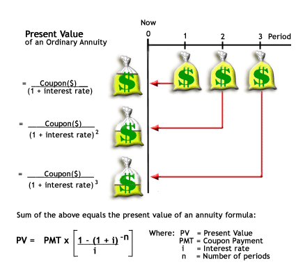
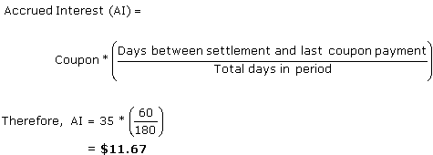
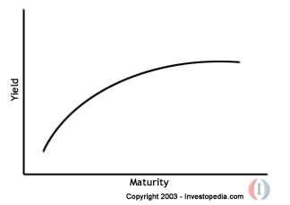
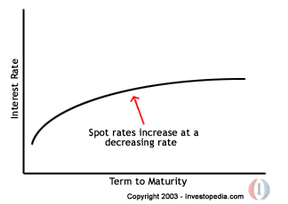
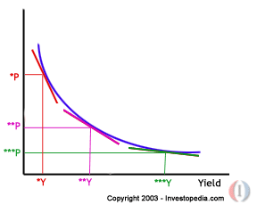

Advanced Bond Concepts: Introduction
In their simplest form, bonds are pretty straightforward. After all, just about anyone can comprehend the borrowing and lending of money. However, like many securities, trading and analyzing bonds involves some more complicated underlying concepts.
The goal of this tutorial is to explain the more complex aspects of fixed-income securities. We'll reinforce and review bond fundamentals such as pricing and yield, explore the term structure of interest rates, and delve into the topics of duration and convexity. (Note: Although technically a bond is a fixed-income security with a maturity of ten years or more, in this tutorial we use the terms "bond" and "fixed-income security" interchangeably.)
The information and explanations in this tutorial assume that you have a basic understanding of fixed-income securities.
(If you feel you need a refresher, please see Bond Basics.)
Advanced Bond Concepts: Bond Type Specifics
Before getting to the all-important subject of bond pricing, we must first understand the many different characteristics bonds can have.
When it comes down to it, a bond is simply a contract between a lender and a borrower by which the borrower promises to repay a loan with interest. However, bonds can take on many additional features and/or options that can complicate the way in which prices and yields are calculated. The classification of a bond depends on its type of issuer, priority, coupon rate and redemption features. The following chart outlines these categories of bond characteristics:
1) Bond Issuers
As the major determiner of a bond's credit quality, the issuer is one of the most important characteristics of a bond. There are significant differences between bonds issued by corporations and those issued by a state government/municipality or national government. In general, securities issued by the federal government have the lowest risk of default while corporate bonds are considered to be riskier ventures. Of course there are always exceptions to the rule. In rare instances, a very large and stable company could have a bond rating that is better than that of a municipality. It is important for us to point out, however, that like corporate bonds, government bonds carry various levels of risk; because all national governments are different, so are the bonds they issue.
International bonds (government or corporate) are complicated by different currencies. That is, these types of bonds are issued within a market that is foreign to the issuer's home market, but some international bonds are issued in the currency of the foreign market and others are denominated in another currency. Here are some types of international bonds:
- The definition of the eurobond market can be confusing because of its name. Although the euro is the currency used by participating European Union countries, eurobonds refer neither to the European currency nor to a European bond market. A eurobond instead refers to any bond that is denominated in a currency other than that of the country in which it is issued. Bonds in the eurobond market are categorized according to the currency in which they are denominated. As an example, a eurobond denominated in Japanese yen but issued in the U.S. would be classified as a euroyen bond.
- Foreign bonds are denominated in the currency of the country in which a foreign entity issues the bond. An example of such a bond is the samurai bond, which is a yen-denominated bond issued in Japan by an American company. Other popular foreign bonds include bulldog and yankee bonds.
- Global bonds are structured so that they can be offered in both foreign and eurobond markets. Essentially, global bonds are similar to eurobonds but can be offered within the country whose currency is used to denominate the bond. As an example, a global bond denominated in yen could be sold to Japan or any other country throughout the Eurobond market.
2) Priority
In addition to the credit quality of the issuer, the priority of the bond is a determiner of the probability that the issuer will pay you back your money. The priority indicates your place in line should the company default on payments. If you hold an unsubordinated (senior) security and the company defaults, you will be first in line to receive payment from the liquidation of its assets. On the other hand, if you own a subordinated (junior) debt security, you will get paid out only after the senior debt holders have received their share.
3) Coupon Rate
Bond issuers may choose from a variety of types of coupons, or interest payments.
- Straight, plain vanilla or fixed-rate bonds pay an absolute coupon rate over a specified period of time. Upon maturity, the last coupon payment is made along with the par value of the bond.
- Floating rate debt instruments or floaters pay a coupon rate that varies according to the movement of the underlying benchmark. These types of coupons could, however, be set to be a fixed percentage above, below, or equal to the benchmark itself. Floaters typically follow benchmarks such as the three, six or nine-month T-bill rate or LIBOR.
- Inverse floaters pay a variable coupon rate that changes in direction opposite to that of short-term interest rates. An inverse floater subtracts the benchmark from a set coupon rate. For example, an inverse floater that uses LIBOR as the underlying benchmark might pay a coupon rate of a certain percentage, say 6%, minus LIBOR.
- Zero coupon, or accrual bonds do not pay a coupon. Instead, these types of bonds are issued at a deep discount and pay the full face value at maturity.
4) Redemption Features
Both investors and issuers are exposed to interest rate risk because they are locked into either receiving or paying a set coupon rate over a specified period of time. For this reason, some bonds offer additional benefits to investors or more flexibility for issuers:
- Callable, or a redeemable bond features gives a bond issuer the right, but not the obligation, to redeem his issue of bonds before the bond's maturity. The issuer, however, must pay the bond holders a premium. There are two subcategories of these types of bonds: American callable bonds and European callable bonds. American callable bonds can be called by the issuer any time after the call protection period while European callable bonds can be called by the issuer only on pre-specified dates.
The optimal time for issuers to call their bonds is when the prevailing interest rate is lower than the coupon rate they are paying on the bonds. After calling its bonds, the company could refinance its debt by reissuing bonds at a lower coupon rate.
- Convertible bonds give bondholders the right but not the obligation to convert their bonds into a predetermined number of shares at predetermined dates prior to the bond's maturity. Of course, this only applies to corporate bonds.
- Puttable bonds give bondholders the right but not the obligation to sell their bonds back to the issuer at a predetermined price and date. These bonds generally protect investors from interest rate risk. If prevailing bond prices are lower than the exercise par of the bond, resulting from interest rates being higher than the bond's coupon rate, it is optimal for investors to sell their bonds back to the issuer and reinvest their money at a higher interest rate.
All of the characteristics and features described above can be applied to a bond in practically unlimited combinations. For example, you could theoretically have a Malaysian corporation issue a subordinated yankee bond paying a floating coupon rate of LIBOR + 1% that is callable at the choice of the issuer on certain dates of the year.
Advanced Bond Concepts: Bond Pricing
It is important for prospective bond buyers to know how to determine the price of a bond because it will indicate the yield received should the bond be purchased. In this section, we will run through some bond price calculations for various types of bond instruments.
Bonds can be priced at a premium, discount, or at par. If the bond's price is higher than its par value, it will sell at a premium because its interest rate is higher than current prevailing rates. If the bond's price is lower than its par value, the bond will sell at a discount because its interest rate is lower than current prevailing interest rates. When you calculate the price of a bond, you are calculating the maximum price you would want to pay for the bond, given the bond's coupon rate in comparison to the average rate most investors are currently receiving in the bond market. Required yield or required rate of return is the interest rate that a security needs to offer in order to encourage investors to purchase it. Usually the required yield on a bond is equal to or greater than the current prevailing interest rates.
Fundamentally, however, the price of a bond is the sum of the present values of all expected coupon payments plus the present value of the par value at maturity. Calculating bond price is simple: all we are doing is discounting the known future cash flows. Remember that to calculate present value (PV) - which is based on the assumption that each payment is re-invested at some interest rate once it is received--we have to know the interest rate that would earn us a known future value. For bond pricing, this interest rate is the required yield. (If the concepts of present and future value are new to you or you are unfamiliar with the calculations, refer to Understanding the Time Value of Money.)
Here is the formula for calculating a bond's price, which uses the basic present value (PV) formula:
|
C = coupon payment n = number of payments i = interest rate, or required yield M = value at maturity, or par value |
The succession of coupon payments to be received in the future is referred to as an ordinary annuity, which is a series of fixed payments at set intervals over a fixed period of time. (Coupons on a straight bond are paid at ordinary annuity.) The first payment of an ordinary annuity occurs one interval from the time at which the debt security is acquired. The calculation assumes this time is the present.
You may have guessed that the bond pricing formula shown above may be tedious to calculate, as it requires adding the present value of each future coupon payment. Because these payments are paid at an ordinary annuity, however, we can use the shorter PV-of-ordinary-annuity formula that is mathematically equivalent to the summation of all the PVs of future cash flows. This PV-of-ordinary-annuity formula replaces the need to add all the present values of the future coupon. The following diagram illustrates how present value is calculated for an ordinary annuity:
|  |
Each full moneybag on the top right represents the fixed coupon payments (future value) received in periods one, two and three. Notice how the present value decreases for those coupon payments that are further into the future the present value of the second coupon payment is worth less than the first coupon and the third coupon is worth the lowest amount today. The farther into the future a payment is to be received, the less it is worth today - is the fundamental concept for which the PV-of-ordinary-annuity formula accounts. It calculates the sum of the present values of all future cash flows, but unlike the bond-pricing formula we saw earlier, it doesn't require that we add the value of each coupon payment. (For more on calculating the time value of annuities, see Anything but Ordinary: Calculating the Present and Future Value of Annuities and Understanding the Time Value of Money. )
By incorporating the annuity model into the bond pricing formula, which requires us to also include the present value of the par value received at maturity, we arrive at the following formula:
Let's go through a basic example to find the price of a plain vanilla bond.
Example 1: Calculate the price of a bond with a par value of $1,000 to be paid in ten years, a coupon rate of 10%, and a required yield of 12%. In our example we'll assume that coupon payments are made semi-annually to bond holders and that the next coupon payment is expected in six months. Here are the steps we have to take to calculate the price:
1. Determine the Number of Coupon Payments: Because two coupon payments will be made each year for ten years, we will have a total of 20 coupon payments.
2. Determine the Value of Each Coupon Payment: Because the coupon payments are semi-annual, divide the coupon rate in half. The coupon rate is the percentage off the bond's par value. As a result, each semi-annual coupon payment will be $50 ($1,000 X 0.05).
3. Determine the Semi-Annual Yield: Like the coupon rate, the required yield of 12% must be divided by two because the number of periods used in the calculation has doubled. If we left the required yield at 12%, our bond price would be very low and inaccurate. Therefore, the required semi-annual yield is 6% (0.12/2).
4. Plug the Amounts Into the Formula:
Accounting for Different Payment Frequencies
In the example above coupons were paid semi-annually, so we divided the interest rate and coupon payments in half to represent the two payments per year. You may be now wondering whether there is a formula that does not require steps two and three outlined above, which are required if the coupon payments occur more than once a year. A simple modification of the above formula will allow you to adjust interest rates and coupon payments to calculate a bond price for any payment frequency:
|
|

Notice that the only modification to the original formula is the addition of "F", which represents the frequency of coupon payments, or the number of times a year the coupon is paid. Therefore, for bonds paying annual coupons, F would have a value of one. Should a bond pay quarterly payments, F would equal four, and if the bond paid semi-annual coupons, F would be two.
Pricing Zero-Coupon Bonds
So what happens when there are no coupon payments? For the aptly-named zero-coupon bond, there is no coupon payment until maturity. Because of this, the present value of annuity formula is unnecessary. You simply calculate the present value of the par value at maturity. Here's a simple example:
Example 2(a): Let's look at how to calculate the price of a zero-coupon bond that is maturing in five years, has a par value of $1,000 and a required yield of 6%.
1. Determine the Number of Periods: Unless otherwise indicated, the required yield of most zero-coupon bonds is based on a semi-annual coupon payment. This is because the interest on a zero-coupon bond is equal to the difference between the purchase price and maturity value, but we need a way to compare a zero-coupon bond to a coupon bond, so the 6% required yield must be adjusted to the equivalent of its semi-annual coupon rate. Therefore, the number of periods for zero-coupon bonds will be doubled, so the zero coupon bond maturing in five years would have ten periods (5 x 2).
2. Determine the Yield: The required yield of 6% must also be divided by two because the number of periods used in the calculation has doubled. The yield for this bond is 3% (6% / 2).
3. Plug the amounts into the formula:
You should note that zero-coupon bonds are always priced at a discount: if zero-coupon bonds were sold at par, investors would have no way of making money from them and therefore no incentive to buy them.
Pricing Bonds between Payment Periods
Up to this point we have assumed that we are purchasing bonds whose next coupon payment occurs one payment period away, according to the regular payment-frequency pattern. So far, if we were to price a bond that pays semi-annual coupons and we purchased the bond today, our calculations would assume that we would receive the next coupon payment in exactly six months. Of course, because you won't always be buying a bond on its coupon payment date, it's important you know how to calculate price if, say, a semi-annual bond is paying its next coupon in three months, one month, or 21 days.
Determining Day Count
To price a bond between payment periods, we must use the appropriate day-count convention. Day count is a way of measuring the appropriate interest rate for a specific period of time. There is actual/actual day count, which is used mainly for Treasury securities. This method counts the exact number of days until the next payment. For example, if you purchased a semi-annual Treasury bond on March 1, 2003, and its next coupon payment is in four months (July 1, 2003), the next coupon payment would be in 122 days:
Time Period = Days Counted
March 1-31 = 31 days
April 1-30 = 30 days
May 1-31 = 31 days
June 1-30 = 30 days
July 1 = 0 days
Total Days = 122 days
To determine the day count, we must also know the number of days in the six-month period of the regular payment cycle. In these six months there are exactly 182 days, so the day count of the Treasury bond would be 122/182, which means that out of the 182 days in the six-month period, the bond still has 122 days before the next coupon payment. In other words, 60 days of the payment period (182 - 122) have already passed. If the bondholder sold the bond today, he or she must be compensated for the interest accrued on the bond over these 60 days.
(Note that if it is a leap year, the total number of days in a year is 366 rather than 365.)
For municipal and corporate bonds, you would use the 30/360 day count convention, which is much simpler as there is no need to remember the actual number of days in each year and month. This count convention assumes that a year consists of 360 days and each month consists of 30 days. As an example, assume the above Treasury bond was actually a semi-annual corporate bond. In this case, the next coupon payment would be in 120 days.
Time Period = Days Counted
March 1-30 = 30 days
April 1-30 = 30 days
May 1-30 = 30 days
June 1-30 = 30 days
July 1 = 0 days
Total Days = 120 days
As a result, the day count convention would be 120/180, which means that 66.7% of the coupon period remains. Notice that we end up with almost the same answer as the actual/actual day count convention above: both day-count conventions tell us that 60 days have passed into the payment period.
Determining Interest Accrued
Accrued interest is the fraction of the coupon payment that the bond seller earns for holding the bond for a period of time between bond payments. The bond price's inclusion of any interest accrued since the last payment period determines whether the bond's price is "dirty" or "clean." Dirty bond prices include any accrued interest that has accumulated since the last coupon payment while clean bond prices do not. In newspapers, the bond prices quoted are often clean prices.
However, because many of the bonds traded in the secondary market are often traded in between coupon payment dates, the bond seller must be compensated for the portion of the coupon payment he or she earns for holding the bond since the last payment. The amount of the coupon payment that the buyer should receive is the coupon payment minus accrued interest. The following example will make this concept more clear.
Example 3: On March 1, 2003, Francesca is selling a corporate bond with a face value of $1,000 and a 7% coupon paid semi-annually. The next coupon payment after March 1, 2003, is expected on June 30, 2003. What is the interest accrued on the bond?
1. Determine the Semi-Annual Coupon Payment: Because the coupon payments are semi-annual, divide the coupon rate in half, which gives a rate of 3.5% (7% / 2). Each semi-annual coupon payment will then be $35 ($1,000 X 0.035).
2. Determine the Number of Days Remaining in the Coupon Period: Because it is a corporate bond, we will use the 30/360 day-count convention.
Time Period = Days Counted
March 1-30 = 30 days
April 1-30 = 30 days
May 1-30 = 30 days
June 1-30 = 30 days
Total Days = 120 days
There are 120 days remaining before the next coupon payment, but because the coupons are paid semi-annually (two times a year), the regular payment period if the bond is 180 days, which, according to the 30/360 day count, is equal to six months. The seller, therefore, has accumulated 60 days worth of interest (180-120).
3. Calculate the Accrued Interest: Accrued interest is the fraction of the coupon payment that the original holder (in this case Francesca) has earned. It is calculated by the following formula:
In this example, the interest accrued by Francesca is $11.67. If the buyer only paid her the clean price, she would not receive the $11.67 to which she is entitled for holding the bond for those 60 days of the 180-day coupon period.
Now you know how to calculate the price of a bond, regardless of when its next coupon will be paid. Bond price quotes are typically the clean prices, but buyers of bonds pay the dirty, or full price. As a result, both buyers and sellers should understand the amount for which a bond should be sold or purchased. In addition, the tools you learned in this section will better enable you to learn the relationship between coupon rate, required yield and price as well as the reasons for which bond prices change in the market.
Advanced Bond Concepts: Yield and Bond Price
In the last section of this tutorial, we touched on the concept of required yield. In this section we'll explain what this means and take a closer look into how various yields are calculated.
The general definition of yield is the return an investor will receive by holding a bond to maturity. So if you want to know what your bond investment will earn, you should know how to calculate yield. Required yield, on the other hand, is the yield or return a bond must offer in order for it to be worthwhile for the investor. The required yield of a bond is usually the yield offered by other plain vanilla bonds that are currently offered in the market and have similar credit quality and maturity.
Once an investor has decided on the required yield, he or she must calculate the yield of a bond he or she wants to buy. Let's proceed and examine these calculations.
Calculating Current Yield
A simple yield calculation that is often used to calculate the yield on both bonds and the dividend yield for stocks is the current yield. The current yield calculates the percentage return that the annual coupon payment provides the investor. In other words, this yield calculates what percentage the actual dollar coupon payment is of the price the investor pays for the bond. The multiplication by 100 in the formulas below converts the decimal into a percentage, allowing us to see the percentage return:

So, if you purchased a bond with a par value of $100 for $95.92 and it paid a coupon rate of 5%, this is how you'd calculate its current yield:

Notice how this calculation does not include any capital gains or losses the investor would make if the bond were bought at a discount or premium. Because the comparison of the bond price to its par value is a factor that affects the actual current yield, the above formula would give a slightly inaccurate answer - unless of course the investor pays par value for the bond. To correct this, investors can modify the current yield formula by adding the result of the current yield to the gain or loss the price gives the investor: [(Par Value – Bond Price)/Years to Maturity]. The modified current yield formula then takes into account the discount or premium at which the investor bought the bond. This is the full calculation:

Let's re-calculate the yield of the bond in our first example, which matures in 30 months and has a coupon payment of $5:
|
|

The adjusted current yield of 6.84% is higher than the current yield of 5.21% because the bond's discounted price ($95.92 instead of $100) gives the investor more of a gain on the investment.
One thing to note, however, is whether you buy the bond between coupon payments. If you do, remember to use the dirty price in place of the market price in the above equation. The dirty price is what you will actually pay for the bond, but usually the figure quoted in U.S. markets is the clean price.
Now we must also account for other factors such as the coupon payment for a zero-coupon bond, which has only one coupon payment. For such a bond, the yield calculation would be as follows:

n = years left until maturity |
If we were considering a zero-coupon bond that has a future value of $1,000 that matures in two years and can be currently purchased for $925, we would calculate its current yield with the following formula:
|
|

The current yield calculation we learned above shows us the return the annual coupon payment gives the investor, but this percentage does not take into account the time value of money or, more specifically, the present value of the coupon payments the investor will receive in the future. For this reason, when investors and analysts refer to yield, they are most often referring to the yield to maturity (YTM), which is the interest rate by which the present values of all the future cash flows are equal to the bond's price.
An easy way to think of YTM is to consider it the resulting interest rate the investor receives if he or she invests all of his or her cash flows (coupons payments) at a constant interest rate until the bond matures. YTM is the return the investor will receive from his or her entire investment. It is the return that an investor gains by receiving the present values of the coupon payments, the par value and capital gains in relation to the price that is paid.
The yield to maturity, however, is an interest rate that must be calculated through trial and error. Such a method of valuation is complicated and can be time consuming, so investors (whether professional or private) will typically use a financial calculator or program that is quickly able to run through the process of trial and error. If you don't have such a program, you can use an approximation method that does not require any serious mathematics.
To demonstrate this method, we first need to review the relationship between a bond's price and its yield. In general, as a bond's price increases, yield decreases. This relationship is measured using the price value of a basis point (PVBP). By taking into account factors such as the bond's coupon rate and credit rating, the PVBP measures the degree to which a bond's price will change when there is a 0.01% change in interest rates.
The charted relationship between bond price and required yield appears as a negative curve:
|
|

This is due to the fact that a bond's price will be higher when it pays a coupon that is higher than prevailing interest rates. As market interest rates increase, bond prices decrease.
The second concept we need to review is the basic price-yield properties of bonds:
| Premium bond: Coupon rate is greater than market interest rates.
Discount bond: Coupon rate is less than market interest rates. |
Thirdly, remember to think of YTM as the yield a bondholder receives if he or she reinvested all coupons received at a constant interest rate, which is the interest rate that we are solving for. If we were to add the present values of all future cash flows, we would end up with the market value or purchase price of the bond.
The calculation can be presented as:
|
|

OR
|
|

Example 1: You hold a bond whose par value is $100 but has a current yield of 5.21% because the bond is priced at $95.92. The bond matures in 30 months and pays a semi-annual coupon of 5%.
1. Determine the Cash Flows: Every six months you would receive a coupon payment of $2.50 (0.025*100). In total, you would receive five payments of $2.50, plus the future value of $100.
2. Plug the Known Amounts into the YTM Formula:
Remember that we are trying to find the semi-annual interest rate, as the bond pays the coupon semi-annually.
3. Guess and Check: Now for the tough part: solving for "i," or the interest rate. Rather than pick random numbers, we can start by considering the relationship between bond price and yield. When a bond is priced at par, the interest rate is equal to the coupon rate. If the bond is priced above par (at a premium), the coupon rate is greater than the interest rate. In our case, the bond is priced at a discount from par, so the annual interest rate we are seeking (like the current yield) must be greater than the coupon rate of 5%.
Now that we know this, we can calculate a number of bond prices by plugging various annual interest rates that are higher than 5% into the above formula. Here is a table of the bond prices that result from a few different interest rates:

|
Because our bond price is $95.92, our list shows that the interest rate we are solving for is between 6%, which gives a price of $95, and 7%, which gives a price of $98. Now that we have found a range between which the interest rate lies, we can make another table showing the prices that result from a series of interest rates that go up in increments of 0.1% instead of 1.0%. Below we see the bond prices that result from various interest rates that are between 6.0% and 7.0%:

We see then that the present value of our bond (the price) is equal to $95.92 when we have an interest rate of 6.8%. If at this point we did not find that 6.8% gives us the exact price that we are paying for the bond, we would have to make another table that shows the interest rates in 0.01% increments. You can see why investors prefer to use special programs to narrow down the interest rates - the calculations required to find YTM can be quite numerous!
Calculating Yield for Callable and Puttable Bonds
Bonds with callable or puttable redemption features have additional yield calculations. A callable bond's valuations must account for the issuer's ability to call the bond on the call date and the puttable bond's valuation must include the buyer's ability to sell the bond at the pre-specified put date. The yield for callable bonds is referred to as yield-to-call, and the yield for puttable bonds is referred to as yield-to-put.
Yield to call (YTC) is the interest rate that investors would receive if they held the bond until the call date. The period until the first call is referred to as the call protection period. Yield to call is the rate that would make the bond's present value equal to the full price of the bond. Essentially, its calculation requires two simple modifications to the yield-to-maturity formula:
|
|

Note that European callable bonds can have multiple call dates and that a yield to call can be calculated for each.
Yield to put (YTP) is the interest rate that investors would receive if they held the bond until its put date. To calculate yield to put, the same modified equation for yield to call is used except the bond put price replaces the bond call value and the time until put date replaces the time until call date.
For both callable and puttable bonds, astute investors will compute both yield and all yield-to-call/yield-to-put figures for a particular bond, and then use these figures to estimate the expected yield. The lowest yield calculated is known as yield to worst, which is commonly used by conservative investors when calculating their expected yield. Unfortunately, these yield figures do not account for bonds that are not redeemed or are sold prior to the call or put date.
Now you know that the yield you receive from holding a bond will differ from its coupon rate because of fluctuations in bond price and from the reinvestment of coupon payments. In addition, you are now able to differentiate between current yield and yield to maturity. In our next section we will take a closer look at yield to maturity and how the YTMs for bonds are graphed to form the term structure of interest rates, or yield curve.
Advanced Bond Concepts: Term Structure of Interest Rates
The term structure of interest rates, also known as the yield curve, is a very common bond valuation method. Constructed by graphing the yield to maturities and the respective maturity dates of benchmark fixed-income securities, the yield curve is a measure of the market's expectations of future interest rates given the current market conditions. Treasuries, issued by the federal government, are considered risk-free, and as such, their yields are often used as the benchmarks for fixed-income securities with the same maturities. The term structure of interest rates is graphed as though each coupon payment of a noncallable fixed-income security were a zero-coupon bond that "matures" on the coupon payment date. The exact shape of the curve can be different at any point in time. So if the normal yield curve changes shape, it tells investors that they may need to change their outlook on the economy.
There are three main patterns created by the term structure of interest rates:
The Theoretical Spot Rate Curve1) Normal Yield Curve: As its name indicates, this is the yield curve shape that forms during normal market conditions, wherein investors generally believe that there will be no significant changes in the economy, such as in inflation rates, and that the economy will continue to grow at a normal rate. During such conditions, investors expect higher yields for fixed income instruments with long-term maturities that occur farther into the future. In other words, the market expects long-term fixed income securities to offer higher yields than short-term fixed income securities. This is a normal expectation of the market because short-term instruments generally hold less risk than long-term instruments; the farther into the future the bond's maturity, the more time and, therefore, uncertainty the bondholder faces before being paid back the principal. To invest in one instrument for a longer period of time, an investor needs to be compensated for undertaking the additional risk.
Remember that as general current interest rates increase, the price of a bond will decrease and its yield will increase.
 2) Flat Yield Curve: These curves indicate that the market environment is sending mixed signals to investors, who are interpreting interest rate movements in various ways. During such an environment, it is difficult for the market to determine whether interest rates will move significantly in either direction farther into the future. A flat yield curve usually occurs when the market is making a transition that emits different but simultaneous indications of what interest rates will do. In other words, there may be some signals that short-term interest rates will rise and other signals that long-term interest rates will fall. This condition will create a curve that is flatter than its normal positive slope. When the yield curve is flat, investors can maximize their risk/return tradeoff by choosing fixed-income securities with the least risk, or highest credit quality. In the rare instances wherein long-term interest rates decline, a flat curve can sometimes lead to an inverted curve.
3) Inverted Yield Curve: These yield curves are rare, and they form during extraordinary market conditions wherein the expectations of investors are completely the inverse of those demonstrated by the normal yield curve. In such abnormal market environments, bonds with maturity dates further into the future are expected to offer lower yields than bonds with shorter maturities. The inverted yield curve indicates that the market currently expects interest rates to decline as time moves farther into the future, which in turn means the market expects yields of long-term bonds to decline. Remember, also, that as interest rates decrease, bond prices increase and yields decline.
You may be wondering why investors would choose to purchase long-term fixed-income investments when there is an inverted yield curve, which indicates that investors expect to receive less compensation for taking on more risk. Some investors, however, interpret an inverted curve as an indication that the economy will soon experience a slowdown, which causes future interest rates to give even lower yields. Before a slowdown, it is better to lock money into long-term investments at present prevailing yields, because future yields will be even lower.
Unfortunately, the basic yield curve does not account for securities that have varying coupon rates. When the yield to maturity was calculated, we assumed that the coupons were reinvested at an interest rate equal to the coupon rate, therefore, the bond was priced at par as though prevailing interest rates were equal to the bond's coupon rate.
The spot-rate curve addresses this assumption and accounts for the fact that many Treasuries offer varying coupons and would therefore not accurately represent similar noncallable fixed-income securities. If for instance you compared a 10-year bond paying a 7% coupon with a 10-year Treasury bond that currently has a coupon of 4%, your comparison wouldn't mean much. Both of the bonds have the same term to maturity, but the 4% coupon of the Treasury bond would not be an appropriate benchmark for the bond paying 7%. The spot-rate curve, however, offers a more accurate measure as it adjusts the yield curve so it reflects any variations in the interest rate of the plotted benchmark. The interest rate taken from the plot is known as the spot rate.
|  |
The spot-rate curve is created by plotting the yields of zero-coupon Treasury bills and their corresponding maturities. The spot rate given by each zero-coupon security and the spot-rate curve are used together for determining the value of each zero-coupon component of a noncallable fixed-income security. Remember, in this case, that the term structure of interest rates is graphed as though each coupon payment of a noncallable fixed-income security were a zero-coupon bond.
T-bills are issued by the government, but they do not have maturities greater than one year. As a result, the bootstrapping method is used to fill in interest rates for zero-coupon securities greater than one year. Bootstrapping is a complicated and involved process and will not be detailed in this section (to your relief!); however, it is important to remember that the bootstrapping method equates a T-bill's value to the value of all zero-coupon components that form the security.
The Credit Spread
The credit spread, or quality spread, is the additional yield an investor receives for acquiring a corporate bond instead of a similar federal instrument. As illustrated in the graph below, the spread is demonstrated as the yield curve of the corporate bond and is plotted with the term structure of interest rates. Remember that the term structure of interest rates is a gauge of the direction of interest rates and the general state of the economy. Corporate fixed-income securities have more risk of default than federal securities and, as a result, the prices of corporate securities are usually lower, while corporate bonds usually have a higher yield.
When inflation rates are increasing (or the economy is contracting) the credit spread between corporate and Treasury securities widens. This is because investors must be offered additional compensation (in the form of a higher coupon rate) for acquiring the higher risk associated with corporate bonds.
When interest rates are declining (or the economy is expanding), the credit spread between Federal and corporate fixed-income securities generally narrows. The lower interest rates give companies an opportunity to borrow money at lower rates, which allows them to expand their operations and also their cash flows. When interest rates are declining, the economy is expanding in the long run, so the risk associated with investing in a long-term corporate bond is also generally lower.
Now you have a general understanding of the concepts and uses of the yield curve. The yield curve is graphed using government securities, which are used as benchmarks for fixed income investments. The yield curve, in conjunction with the credit spread, is used for pricing corporate bonds. Now that you have a better understanding of the relationship between interest rates, bond prices and yields, we are ready to examine the degree to which bond prices change with respect to a change in interest rates.
Advanced Bond Concepts: Duration
The term duration has a special meaning in the context of bonds. It is a measurement of how long, in years, it takes for the price of a bond to be repaid by its internal cash flows. It is an important measure for investors to consider, as bonds with higher durations carry more risk and have higher price volatility than bonds with lower durations.
For each of the two basic types of bonds the duration is the following:
1. Zero-Coupon Bond – Duration is equal to its time to maturity.
2. Vanilla Bond - Duration will always be less than its time to maturity.
Let's first work through some visual models that demonstrate the properties of duration for a zero-coupon bond and a vanilla bond.
Duration of a Zero-Coupon Bond
The red lever above represents the four-year time period it takes for a zero-coupon bond to mature. The money bag balancing on the far right represents the future value of the bond, the amount that will be paid to the bondholder at maturity. The fulcrum, or the point holding the lever, represents duration, which must be positioned where the red lever is balanced. The fulcrum balances the red lever at the point on the time line at which the amount paid for the bond and the cash flow received from the bond are equal. The entire cash flow of a zero-coupon bond occurs at maturity, so the fulcrum is located directly below this one payment.
Duration of a Vanilla or Straight Bond
Consider a vanilla bond that pays coupons annually and matures in five years. Its cash flows consist of five annual coupon payments and the last payment includes the face value of the bond.
The moneybags represent the cash flows you will receive over the five-year period. To balance the red lever at the point where total cash flows equal the amount paid for the bond, the fulcrum must be farther to the left, at a point before maturity. Unlike the zero-coupon bond, the straight bond pays coupon payments throughout its life and therefore repays the full amount paid for the bond sooner.
Factors Affecting Duration
It is important to note, however, that duration changes as the coupons are paid to the bondholder. As the bondholder receives a coupon payment, the amount of the cash flow is no longer on the time line, which means it is no longer counted as a future cash flow that goes towards repaying the bondholder. Our model of the fulcrum demonstrates this: as the first coupon payment is removed from the red lever and paid to the bondholder, the lever is no longer in balance because the coupon payment is no longer counted as a future cash flow.
|
|

The fulcrum must now move to the right in order to balance the lever again:
Duration increases immediately on the day a coupon is paid, but throughout the life of the bond, the duration is continually decreasing as time to the bond's maturity decreases. The movement of time is represented above as the shortening of the red lever. Notice how the first diagram had five payment periods and the above diagram has only four. This shortening of the time line, however, occurs gradually, and as it does, duration continually decreases. So, in summary, duration is decreasing as time moves closer to maturity, but duration also increases momentarily on the day a coupon is paid and removed from the series of future cash flows - all this occurs until duration, eventually converges with the bond's maturity. The same is true for a zero-coupon bond
Duration: Other factors
Besides the movement of time and the payment of coupons, there are other factors that affect a bond's duration: the coupon rate and its yield. Bonds with high coupon rates and, in turn, high yields will tend to have lower durations than bonds that pay low coupon rates or offer low yields. This makes empirical sense, because when a bond pays a higher coupon rate or has a high yield, the holder of the security receives repayment for the security at a faster rate. The diagram below summarizes how duration changes with coupon rate and yield.
Types of Duration
There are four main types of duration calculations, each of which differ in the way they account for factors such as interest rate changes and the bond's embedded options or redemption features. The four types of durations are Macaulay duration, modified duration, effective duration and key-rate duration.
|
Macaulay Duration The formula usually used to calculate a bond\'s basic duration is the Macaulay duration, which was created by Frederick Macaulay in 1938, although it was not commonly used until the 1970s. Macaulay duration is calculated by adding the results of multiplying the present value of each cash flow by the time it is received and dividing by the total price of the security. The formula for Macaulay duration is as follows:
Remember that bond price equals: 
So the following is an expanded version of Macaulay duration:
Example 1: Betty holds a five-year bond with a par value of $1,000 and coupon rate of 5%. For simplicity, let's assume that the coupon is paid annually and that interest rates are 5%. What is the Macaulay duration of the bond?
= 4.55 years Fortunately, if you are seeking the Macaulay duration of a zero-coupon bond, the duration would be equal to the bond's maturity, so there is no calculation required. Modified Duration Modified duration is a modified version of the Macaulay model that accounts for changing interest rates. Because they affect yield, fluctuating interest rates will affect duration, so this modified formula shows how much the duration changes for each percentage change in yield. For bonds without any embedded features, bond price and interest rate move in opposite directions, so there is an inverse relationship between modified duration and an approximate 1% change in yield. Because the modified duration formula shows how a bond's duration changes in relation to interest rate movements, the formula is appropriate for investors wishing to measure the volatility of a particular bond. Modified duration is calculated as the following: 
OR
Let's continue to analyze Betty's bond and run through the calculation of her modified duration. Currently her bond is selling at $1,000, or par, which translates to a yield to maturity of 5%. Remember that we calculated a Macaulay duration of 4.55.
= 4.33 years Our example shows that if the bond's yield changed from 5% to 6%, the duration of the bond will decline to 4.33 years. Because it calculates how duration will change when interest increases by 100 basis points, the modified duration will always be lower than the Macaulay duration. Effective Duration The modified duration formula discussed above assumes that the expected cash flows will remain constant, even if prevailing interest rates change; this is also the case for option-free fixed-income securities. On the other hand, cash flows from securities with embedded options or redemption features will change when interest rates change. For calculating the duration of these types of bonds, effective duration is the most appropriate. Effective duration requires the use of binomial trees to calculate the option-adjusted spread (OAS). There are entire courses built around just those two topics, so the calculations involved for effective duration are beyond the scope of this tutorial. There are, however, many programs available to investors wishing to calculate effective duration. Key-Rate Duration The final duration calculation to learn is key-rate duration, which calculates the spot durations of each of the 11 "key" maturities along a spot rate curve. These 11 key maturities are at the three-month and one, two, three, five, seven, 10, 15, 20, 25, and 30-year portions of the curve. In essence, key-rate duration, while holding the yield for all other maturities constant, allows the duration of a portfolio to be calculated for a one-basis-point change in interest rates. The key-rate method is most often used for portfolios such as the bond ladder, which consists of fixed-income securities with differing maturities. Here is the formula for key-rate duration:
The sum of the key-rate durations along the curve is equal to the effective duration. |


Duration and Bond Price Volatility
More than once throughout this tutorial, we have established that when interest rates rise, bond prices fall, and vice versa. But how does one determine the degree of a price change when interest rates change? Generally, bonds with a high duration will have a higher price fluctuation than bonds with a low duration. But it is important to know that there are also three other factors that determine how sensitive a bond's price is to changes in interest rates. These factors are term to maturity, coupon rate and yield to maturity. Knowing what affects a bond's volatility is important to investors who use duration-based immunization strategies, which we discuss below, in their portfolios.
|
Factors 1 and 2: Coupon rate and Term to Maturity If term to maturity and a bond\'s initial price remain constant, the higher the coupon, the lower the volatility, and the lower the coupon, the higher the volatility. If the coupon rate and the bond\'s initial price are constant, the bond with a longer term to maturity will display higher price volatility and a bond with a shorter term to maturity will display lower price volatility. Therefore, if you would like to invest in a bond with minimal interest rate risk, a bond with high coupon payments and a short term to maturity would be optimal. An investor who predicts that interest rates will decline would best potentially capitalize on a bond with low coupon payments and a long term to maturity, since these factors would magnify a bond\'s price increase. Factor 3: Yield to Maturity (YTM) The sensitivity of a bond\'s price to changes in interest rates also depends on its yield to maturity. A bond with a high yield to maturity will display lower price volatility than a bond with a lower yield to maturity, but a similar coupon rate and term to maturity. Yield to maturity is affected by the bond\'s credit rating, so bonds with poor credit ratings will have higher yields than bonds with excellent credit ratings. Therefore, bonds with poor credit ratings typically display lower price volatility than bonds with excellent credit ratings. |
All three factors affect the degree to which bond price will change in the face of a change in prevailing interest rates. These factors work together and against each other. Consider the chart below:
So, if a bond has both a short term to maturity and a low coupon rate, its characteristics have opposite effects on its volatility: the low coupon raises volatility and the short term to maturity lowers volatility. The bond's volatility would then be an average of these two opposite effects.
Immunization
As we mentioned in the above section, the interrelated factors of duration, coupon rate, term to maturity and price volatility are important for those investors employing duration-based immunization strategies. These strategies aim to match the durations of assets and liabilities within a portfolio for the purpose of minimizing the impact of interest rates on the net worth. To create these strategies, portfolio managers use Macaulay duration.
For example, say a bond has a two-year term with four coupons of $50 and a par value of $1,000. If the investor did not reinvest his or her proceeds at some interest rate, he or she would have received a total of $1200 at the end of two years. However, if the investor were to reinvest each of the bond cash flows until maturity, he or she would have more than $1200 in two years. Therefore, the extra interest accumulated on the reinvested coupons would allow the bondholder to satisfy a future $1200 obligation in less time than the maturity of the bond.
Understanding what duration is, how it is used and what factors affect it will help you to determine a bond's price volatility. Volatility is an important factor in determining your strategy for capitalizing on interest rate movements. Furthermore, duration will also help you to determine how you can protect your portfolio from interest rate risk.
Advanced Bond Concepts: Convexity
For any given bond, a graph of the relationship between price and yield is convex. This means that the graph forms a curve rather than a straight-line (linear). The degree to which the graph is curved shows how much a bond's yield changes in response to a change in price. In this section we take a look at what affects convexity and how investors can use it to compare bonds.
Convexity and Duration
If we graph a tangent at a particular price of the bond (touching a point on the curved price-yield curve), the linear tangent is the bond's duration, which is shown in red on the graph below. The exact point where the two lines touch represents Macaulay duration. Modified duration, as we saw in the preceding section of this tutorial, must be used to measure how duration is affected by changes in interest rates. But modified duration does not account for large changes in price. If we were to use duration to estimate the price resulting from a significant change in yield, the estimation would be inaccurate. The yellow portions of the graph show the ranges in which using duration for estimating price would be inappropriate.
Furthermore, as yield moves further from Y*, the yellow space between the actual bond price and the prices estimated by duration (tangent line) increases.
The convexity calculation, therefore, accounts for the inaccuracies of the linear duration line. This calculation that plots the curved line uses a Taylor series, a very complicated calculus theory that we won't be describing here. The main thing for you to remember about convexity is that it shows how much a bond's yield changes in response to changes in price.
Properties of Convexity
Convexity is also useful for comparing bonds. If two bonds offer the same duration and yield but one exhibits greater convexity, changes in interest rates will affect each bond differently. A bond with greater convexity is less affected by interest rates than a bond with less convexity. Also, bonds with greater convexity will have a higher price than bonds with a lower convexity, regardless of whether interest rates rise or fall. This relationship is illustrated in the following diagram:
As you can see Bond A has greater convexity than Bond B, but they both have the same price and convexity when price equals *P and yield equals *Y. If interest rates change from this point by a very small amount, then both bonds would have approximately the same price, regardless of the convexity. When yield increases by a large amount, however, the prices of both Bond A and Bond B decrease, but Bond B's price decreases more than Bond A's. Notice how at **Y the price of Bond A remains higher, demonstrating that investors will have to pay more money (accept a lower yield to maturity) for a bond with greater convexity.
What Factors Affect Convexity?
Here is a summary of the different kinds of convexities produced by different types of bonds:
1) The graph of the price-yield relationship for a plain vanilla bond exhibits positive convexity. The price-yield curve will increase as yield decreases, and vice versa. Therefore, as market yields decrease, the duration increases (and vice versa).
 2) In general, the higher the coupon rate, the lower the convexity of a bond. Zero-coupon bonds have the highest convexity.
3) Callable bonds will exhibit negative convexity at certain price-yield combinations. Negative convexity means that as market yields decrease, duration decreases as well. See the chart below for an example of a convexity diagram of callable bonds.

Remember that for callable bonds, which we discuss in our section detailing types of bonds, modified duration can be used for an accurate estimate of bond price when there is no chance that the bond will be called. In the chart above, the callable bond will behave like an option-free bond at any point to the right of *Y. This portion of the graph has positive convexity because, at yields greater than *Y, a company would not call its bond issue: doing so would mean the company would have to reissue new bonds at a higher interest rate. Remember that as bond yields increase, bond prices are decreasing and thus interest rates are increasing. A bond issuer would find it most optimal, or cost-effective, to call the bond when prevailing interest rates have declined below the callable bond's interest (coupon) rate. For decreases in yields below *Y, the graph has negative convexity, as there is a higher risk that the bond issuer will call the bond. As such, at yields below *Y, the price of a callable bond won't rise as much as the price of a plain vanilla bond.
Convexity is the final major concept you need to know for gaining insight into the more technical aspects of the bond market. Understanding even the most basic characteristics of convexity allows the investor to better comprehend the way in which duration is best measured and how changes in interest rates affect the prices of both plain vanilla and callable bonds.
Advanced Bond Concepts: Formula Cheat Sheet
Below is our formula cheat sheet for bond analysis.
| Actual/Actual Day Count (Non-leap year)
|

| Actual/Actual Day Count (Leap year)
|

Bond Price

| 30/360 Day Count
|

| Accrued Interest (AI)
|

| Adjusted Current Yield
|

| Current Yield
|

| Key Rate Duration
|

| Macaulay Duration
|

| Modified Duration
|

| Yield
|

| Yield to Call
|

| Yield to Put
|

{kind=link}
{kind=link}
{kind=link}
{kind=link}
{kind=link}
{kind=link}
{kind=link}
{kind=link}
{kind=link}
{kind=link}
{kind=link}
{kind=link}
{kind=link}
{kind=link}
{kind=link}
{kind=link}
{kind=link}
{kind=link}
{kind=link}
{kind=link}
Zero Coupon Bond Price

Advanced Bond Concepts: Conclusion
You have now learned some of the more advanced topics associated with bonds. Let's run through a quick recap of what we discussed in this tutorial:
- Bonds vary according to characteristics such as the type of issuer, priority, coupon rate, and redemption features.
- Bond prices may be either dirty or clean, depending on when the last coupon payment was made and how much interest has been accrued.
- Yield is a measure of the income an investor receives if he or she holds a bond until maturity; required yield is the minimum income a bond must offer in order to attract investors.
- Current yield is a basic calculation of the annual percentage return an investor receives from his or her initial investment.
- Yield to maturity is the resulting interest rate an investor receives if he or she invests all coupon payments at a constant interest rate until the bond matures.
- The term structure of interest rates, or yield curve, is useful in determining the direction of market interest rates.
- The yield curve demonstrates the concept of the credit spread between corporate and government fixed income securities.
- Duration is the time in years it takes a bond's cash flows to repay the investor the total price of the bond.
- A convex line is formed when the yield and price of a bond is graphed, and this line can exhibit positive or negative convexity.
- If we draw a line tangent to the convex price-yield curve, we draw a line that is equal to duration. The relationship between the linear duration line and the convex price-yield curve allows us to determine the accuracy associated with using modified duration.
- Bonds with greater convexity exhibit less volatility when there is a change in interest rates.